ESXi — Procedures¶
Before you begin¶
- Access: vCenter read-only minimum; Administrator role for remediation steps
- Timing: safe to run during business hours unless a step is marked ⚠ (causes interruption)
- Dependencies: no active upgrades or migrations on the same infrastructure
- Logging: capture command output — paste into the change record on completion
Change Readiness¶
- [ ] vMotion tested and working between affected hosts before any maintenance
- [ ] Host not in maintenance mode — no other concurrent work on same host
- [ ] HA admission control checked: cluster has capacity to tolerate host loss
- [ ] All storage paths healthy and no dead paths:
esxcli storage core path list | grep dead - [ ] vCenter backup is current (file-based backup or VAMI snapshot taken recently)
- [ ] DRS is enabled and configured to fully automated — VMs will migrate automatically
- [ ] Change window approved and communicated; storage and compute teams notified
| Item | Status | Notes |
|---|---|---|
| vMotion tested | Test migration successful | |
| HA admission control OK | Cluster has failover capacity | |
| Storage paths healthy | grep dead returns 0 |
|
| vCenter backup current | Backup timestamp | |
| Change window approved | Ticket reference |
Maintenance Window¶
- Confirm host is healthy and not already in maintenance mode:
Get-VMHost | Select Name,ConnectionState - Check HA admission control — ensure cluster can tolerate one less host during maintenance
- Put host into maintenance mode:
Set-VMHost -VMHost <hostname> -State Maintenance - Wait for all VMs to vMotion off the host — monitor via vCenter Tasks pane
- Confirm zero VMs running on the host:
Get-VM -Location <host> | Where-Object {$_.PowerState -eq "PoweredOn"} - Perform the required maintenance work (patching, hardware replacement, config change)
- Exit maintenance mode:
Set-VMHost -VMHost <hostname> -State Connected - Validate host is Connected, all storage paths active, NTP in sync, and VMs have migrated back
Post-Change Validation¶
- [ ] Host shows Connected and PoweredOn in vCenter
- [ ] No hardware health alarms triggered:
esxcli hardware health get - [ ] All storage paths active, no dead paths:
esxcli storage core path list | grep dead - [ ] All vmnic uplinks connected:
esxcli network nic list - [ ] VMs running correctly on the host or successfully migrated back
- [ ] NTP synchronized:
esxcli system ntp getconfirmsRunning: true - [ ] No new vCenter alarms or vmkernel errors introduced by the change
- [ ] Close change ticket with validation evidence attached
Incident Triage¶
- [ ] Check host connection state in vCenter — Connected, Disconnected, or Not Responding?
- [ ] Run
esxcli hardware health get— identify any hardware component in Warning or Error state - [ ] Check storage paths:
esxcli storage core path list | grep dead - [ ] Check network uplinks:
esxcli network nic list— look for down links - [ ] Review vmkernel log:
tail -500 /var/log/vmkernel.log - [ ] Check NTP status — a drifted clock can cause certificate and auth failures
- [ ] Review vCenter events for the affected host around the incident time
- [ ] If host is Not Responding, attempt IPMI/iDRAC/iLO console access
| Question | Answer |
|---|---|
| Host connection state? | Connected / Disconnected / Not Responding |
| Hardware health alerts? | esxcli hardware health get |
| Dead storage paths? | esxcli storage core path list \| grep dead |
| vmnic uplinks down? | esxcli network nic list |
| vmkernel.log at incident time? | /var/log/vmkernel.log — SCSI, NMP, network errors |
Add a VMkernel Adapter (vmk)¶
A VMkernel adapter (vmk) carries ESXi management, vMotion, vSAN, or NFS traffic. Add a new vmk when you are separating traffic types onto dedicated VLANs or adding a second vMotion path.
Prerequisites: target vSwitch or dvSwitch port group already exists; IP subnet and VLAN confirmed with the network team.
-
Identify the target vSwitch and port group:
-
Add the VMkernel adapter with a static IP:
-
Enable the appropriate traffic tag (vMotion in this example):
Valid tag names:
Management,VMotion,vSAN,faultToleranceLogging,vSphereReplication. -
Verify the adapter is up and the IP is set:
-
Test connectivity from the host to a remote vmk on the same subnet:
Configure a vSS Port Group¶
A standard switch (vSS) port group defines the VLAN tag and policy that VMs or VMkernel adapters on that switch use. Add or modify port groups to extend VLAN access or change security policy without touching the uplinks.
-
List existing port groups and switches:
-
Add a new port group to the target vSwitch:
-
Set the VLAN ID:
-
(Optional) Override security policy on the port group:
-
Verify the port group is visible:
Change vSwitch MTU (Jumbo Frames)¶
Raising MTU to 9000 (jumbo frames) reduces CPU overhead for vSAN and NFS workloads. The physical switches and all vmk adapters on that vSwitch must also be set to 9000 before enabling — a mismatch causes silent packet fragmentation.
Prerequisites: physical switch ports already configured for MTU 9000; change window in place.
-
Check the current MTU on all vSwitches:
-
Set the vSwitch MTU to 9000:
-
Update each VMkernel adapter on that vSwitch to match:
-
Verify the change took effect:
-
Validate end-to-end with a large-frame ping (do-not-fragment):
Packet size 8972 = 9000 − 28 bytes (IP + ICMP headers). A successful reply confirms the physical path supports jumbo frames.
Rescan Storage Adapters¶
Run a rescan after adding new LUNs, zoning changes, or after plugging in a new HBA so ESXi discovers new devices and paths without a reboot.
-
List available storage adapters:
-
Rescan all adapters (recommended — covers HBA and software iSCSI):
-
To rescan a specific adapter only:
-
Verify new devices are visible:
-
Check all paths are active:
No output means all paths are active. Dead or standby paths will appear here.
Mount/Unmount a Datastore¶
Unmount a datastore before decommissioning a LUN or performing storage maintenance. Mount to bring a new NFS share or VMFS volume into inventory.
Data corruption risk
Unmounting a VMFS datastore while VMs are still registered to it — even powered-off VMs — causes immediate data corruption. Confirm zero VMs are registered before unmounting. If VMs exist, unregister or migrate them first.
Unmount (VMFS or NFS):
-
Confirm no VMs are registered on the datastore:
-
Identify the datastore UUID:
-
Unmount the datastore:
Mount an NFS datastore:
-
Mount the NFS share:
-
Verify it appears in the filesystem list:
Mount an existing VMFS volume (after rescan):
After a rescan the volume usually auto-mounts. If it does not:
Enable Lockdown Mode¶
Lockdown mode prevents direct root login to the ESXi host — all management must go through vCenter. Enable it to reduce the attack surface in production clusters.
Host lockout risk
If vCenter becomes unavailable after lockdown mode is enabled, and no Exception Users are configured, there is no way to log in to the host — not even via SSH or the DCUI. Physical console access to disable lockdown via DCUI is the only recovery. Before enabling, add at least one Exception User (a break-glass local account) and confirm vCenter HA or a backup vCenter is available.
Note: before enabling, ensure at least one Exception User is configured in DCUI access, and confirm vCenter is reachable and healthy. Lockdown mode cannot be toggled from the host CLI after it is enabled.
-
Enable normal lockdown mode from the DCUI or vCenter:
- vCenter UI path: Host → Configure → Security Profile → Lockdown Mode → Edit → Normal
- PowerCLI:
-
Verify lockdown mode is active:
-
To disable lockdown mode (requires vCenter access or physical DCUI access):
-
Add exception users (accounts that can still log in directly during lockdown):
- vCenter UI path: Host → Configure → Security Profile → Lockdown Mode → Exception Users → Add
Configure ESXi Firewall Rules¶
The ESXi firewall controls which services are reachable on the management vmk. Restrict allowed IP ranges on each service to limit exposure.
-
List all firewall rules and their current state:
-
Enable a specific ruleset (e.g., syslog outbound):
-
Restrict a ruleset to specific source IPs only:
-
Remove a previously allowed IP:
-
Refresh the firewall to apply changes:
-
Verify the ruleset's allowed IPs:
Change the Root Password¶
Rotate the root password after any personnel change, as part of a quarterly credential rotation policy, or after a security incident.
Via esxcli (SSH session on the host):
Enter the new password twice when prompted. ESXi enforces password complexity — minimum 7 characters with a mix of character classes.
Via PowerCLI (requires existing vCenter session):
$vmhost = Get-VMHost -Name "esxi01.corp.local"
$esxcli = Get-EsxCli -VMHost $vmhost -V2
$esxcli.system.account.set.Invoke(@{id="root"; password="NewP@ssw0rd!"; passwordconfirmation="NewP@ssw0rd!"})
Post-rotation:
- Verify login works with the new password before closing the SSH session.
- Update the credential vault or password manager entry immediately.
- If the host is managed by vCenter with stored credentials (e.g., host profile), update the profile or re-enter the password in the host's credential store.
- Log the rotation in the change management system with timestamp and operator.
Enable and Configure Syslog¶
Forwarding ESXi logs to a central syslog server (e.g., Syslog-NG, Graylog, vRealize Log Insight) is required for security audit trails and incident investigation across multiple hosts.
-
Set the remote syslog target:
Supported protocols:
udp://,tcp://,ssl://. Use TCP or SSL for reliable delivery. -
Reload the syslog service to apply the change:
-
Open the syslog firewall ruleset to allow outbound traffic:
-
Verify the configuration:
-
Send a test message to confirm delivery at the syslog server:
-
On the syslog server, confirm the test message was received. If not, check:
- UDP/TCP 514 is open between the host management vmk and the syslog server
- Firewall ruleset
syslogshowsEnabled: trueand the correct allowed IPs
Apply a Patch Bundle via esxcli (Offline)¶
Use this procedure when the host has no internet access and patches are delivered as .zip bundles from the VMware patch depot or a local repository.
Host reboot required
Applying an ESXi patch requires a full host reboot. All VMs must be migrated off the host (maintenance mode) before applying the patch. Applying on a host with running VMs will either fail at apply time or cause an unplanned outage when the host reboots. Ensure HA admission control confirms the cluster can tolerate this host being offline.
Prerequisites: patch bundle .zip transferred to a datastore the host can access; host in maintenance mode.
-
Put the host in maintenance mode (see Maintenance Window procedure above).
-
Copy the patch bundle to a local datastore. From a management machine:
-
SSH to the host and verify the bundle:
-
Perform a dry run to check for conflicts:
-
Apply the patch:
-
Reboot the host for the patches to take effect:
-
After reboot, verify the build number matches the expected patch level:
-
Exit maintenance mode and run Post-Change Validation.
Enable Quick Boot¶
Quick Boot allows ESXi to restart without a full hardware POST, reducing patch reboot time from ~15 minutes to ~2–3 minutes. It is supported on hardware that passes VMware's compatibility check.
-
Check whether the hardware supports Quick Boot:
A return code of
0means Quick Boot is supported. Any other code means the hardware is incompatible (often due to BIOS or NIC firmware). -
Enable Quick Boot:
-
Verify the setting:
-
Quick Boot takes effect on the next restart triggered by
esxcli system shutdown reboot. It does not apply to cold power cycles (full POST still runs on power-on from off). -
To disable Quick Boot:
Put Host in Image-Based Management (vLCM)¶
vSphere Lifecycle Manager (vLCM) image-based management replaces baseline patching with a declarative desired-image model. All hosts in a vLCM-managed cluster must use the same image; the cluster cannot mix baseline and image management.
All hosts in the cluster will reboot
Switching a cluster to vLCM and remediating moves every host through maintenance mode and reboots it in sequence. For a 4-node cluster with DRS, this takes 30–60 minutes. Verify HA admission control before starting — if a host is already degraded, vLCM remediation can exceed the cluster's failover capacity and block VM migrations. Firmware packages (if included in the image) may add additional driver reloads that extend the reboot time.
Prerequisites: vCenter 7.0 U1+ with Lifecycle Manager; cluster currently using baselines; all hosts on a compatible hardware/driver matrix for the target image.
-
In vCenter, navigate to: Menu → Lifecycle Manager → Clusters.
-
Select the cluster and choose Manage with a Single Image.
-
vLCM will import the current host's software profile as the initial desired image. Review and confirm the image components (base ESXi version, vendor add-ons, firmware packages if using Broadcom/Dell/HPE integrations).
-
Remediate all hosts in the cluster to bring them to the desired image:
- vCenter UI path: Cluster → Updates → Image → Remediate All
-
Monitor remediation tasks in the vCenter Tasks pane. Each host will enter maintenance mode, apply the image, and reboot automatically.
-
Verify all hosts show Compliant in the Image Compliance column after remediation.
-
Confirm the build version on each host matches the image:
-
Once all hosts are compliant, the cluster is fully under vLCM image management. Future patching is done by editing the desired image and re-remediating.
Configure NTP¶
Accurate time is required for SSO Kerberos, vSAN consensus, certificates, and HA heartbeats.
# Set NTP servers (replace existing config)
esxcli system ntp set --server ntp1.example.local --server ntp2.example.local
# Enable the NTP client service
esxcli system ntp set --enabled true
# Verify NTP sync status
esxcli system ntp get
# Look for: NTP Service: Running, Sync: Yes
# Manual time sync if NTP is syncing but host time has drifted
ntpq -p # run from ESXi shell; shows stratum and offset
Verify from vCenter: Host → Configure → Time Configuration — confirm NTP service running and servers listed.
Configure Hostname and DNS¶
# Set the hostname
esxcli system hostname set --fqdn esxi-01.example.local
# Set DNS servers
esxcli network ip dns server add --server-address 10.0.0.10
esxcli network ip dns server add --server-address 10.0.0.11
# Set DNS search domain
esxcli network ip dns search add --domain example.local
# Verify hostname and DNS
esxcli system hostname get
esxcli network ip dns server list
esxcli network ip dns search list
# Confirm forward/reverse DNS resolution
nslookup esxi-01.example.local
nslookup 10.0.1.20 # host management IP
Join ESXi Host to Active Directory¶
AD join allows AD users and groups to authenticate to the ESXi host and enables LDAP-based lockdown mode.
# Join domain from ESXi shell
esxcli system secpolicy domain join --domain EXAMPLE.LOCAL \
--username administrator --password '<password>'
# Verify domain join status
esxcli system secpolicy domain list
# Expect: Domain: EXAMPLE.LOCAL, Joined: true
Assign AD group to ESXi Administrator role after joining: - vCenter → Host → Configure → Authentication Services → confirm domain status - vCenter → Host → Configure → Host Users/Groups → add the AD group
Configure SNMP¶
# Enable SNMP service
esxcli system snmp set --enable true
# Set SNMP community string (SNMPv1/v2c)
esxcli system snmp set --communities <community-string>
# Configure trap targets (NMS IP + community)
esxcli system snmp set --targets <nms-ip>@161/<community>
# Verify configuration
esxcli system snmp get
# Test SNMP (send a test trap)
esxcli system snmp test
Configure a Coredump Target¶
Required for support bundle generation and post-crash analysis.
# List available disk partitions for coredump
esxcli system coredump partition list
# Set the coredump partition (use a small dedicated partition)
esxcli system coredump partition set --partition /vmfs/devices/disks/naa.xxx:9
# Enable coredump to network (coredump collector) — preferred for diskless hosts
esxcli system coredump network set --interface-name vmk0 \
--server-ip <coredump-collector-ip> --server-port 6500
esxcli system coredump network set --enable true
# Verify coredump configuration
esxcli system coredump partition get
esxcli system coredump network get
Decommission and Remove an ESXi Host¶
Use when permanently removing a host from the environment — for hardware retirement, site consolidation, or replacing a node with newer hardware.
Evacuate all VMs and vSAN objects before removing the host
Removing a host from vCenter without first evacuating VMs and vSAN data will leave VMs in an invalid state and may cause vSAN object loss if FTT is already at its limit.
Step 1 — Migrate All VMs Off the Host¶
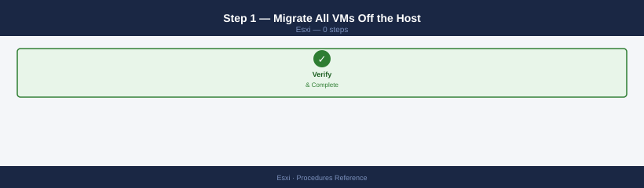
# PowerCLI — vMotion all powered-on VMs to other hosts in the cluster
$host = Get-VMHost "esxi-host-04.example.local"
Get-VM -Location $host | Where-Object {$_.PowerState -eq "PoweredOn"} |
ForEach-Object {
$dest = Get-VMHost -Location (Get-Cluster -VMHost $host) |
Where-Object {$_.Name -ne $host.Name -and $_.ConnectionState -eq "Connected"} |
Get-Random
Move-VM -VM $_ -Destination $dest
}
For powered-off VMs: move their home datastore registration to another host via vCenter → right-click VM → Migrate → Change Storage Only.
Step 2 — Evacuate vSAN Data (If vSAN Cluster)¶
Put the host in maintenance mode with Full data migration:
Set-VMHost -VMHost (Get-VMHost "esxi-host-04.example.local") `
-State Maintenance -VsanDataMigrationMode Full -Confirm:$false
Wait for resync = 0 before proceeding:
Step 3 — Enter Maintenance Mode (Non-vSAN)¶
For non-vSAN clusters, enter standard maintenance mode:
Step 4 — Remove the Host from vCenter¶
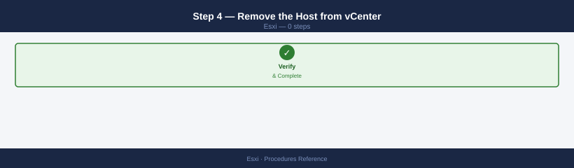
In vCenter: right-click the host → Remove from Inventory
If the host is in a cluster: right-click → Disconnect, then right-click the disconnected host → Remove from Inventory
# PowerCLI
$host = Get-VMHost "esxi-host-04.example.local"
Remove-VMHost -VMHost $host -Confirm:$false
Step 5 — Clean Up DNS and IPAM¶
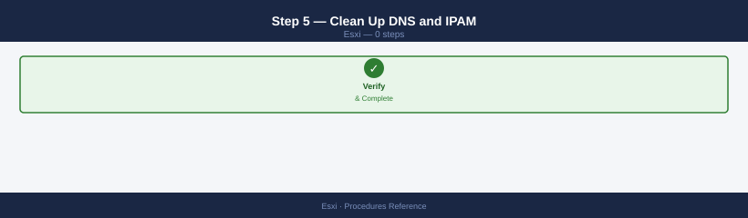
- Remove the host's A and PTR DNS records
- Release the management IP, vMotion IP, and storage IPs from IPAM
- If the host is in the SAN zone configuration (Brocade/Cisco), remove its WWN from the zone
Step 6 — Wipe the Host (Before Physical Repurposing)¶
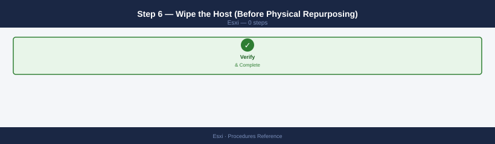
If the hardware is being repurposed or returned:
# Boot from ESXi installer ISO and select "Install" → manually partition
# Or use RASR/factory reset tools if VxRail
# Wipe all data with esxcli (from ESXi shell, if still running):
esxcli storage filesystem unmount -l /vmfs/volumes/datastore-name
esxcli storage core device setconfig -d naa.<id> --perennially-reserved false
Configure Software iSCSI Initiator¶
Used when connecting ESXi hosts to iSCSI storage arrays (NetApp, Pure FlashArray, Dell PowerStore, EMC, etc.). The software iSCSI initiator creates a vmkernel adapter for iSCSI traffic.
Step 1 — Add a VMkernel Adapter for iSCSI¶
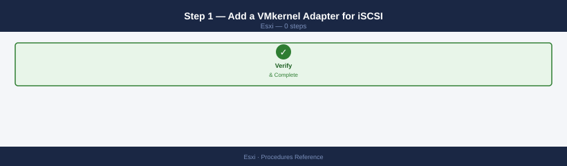
iSCSI traffic should run on a dedicated VMkernel adapter (not the management vmk0):
- vCenter → host → Configure → Networking → VMkernel Adapters → Add
- Create a new port group on a storage-dedicated vSwitch or VDS port group
- Assign an IP in the iSCSI VLAN (e.g., 10.0.50.x), no default gateway needed if the iSCSI target is on the same L2
- Enable only Storage (iSCSI) in the Services checkbox — do not enable Management on this vmk
For multipath iSCSI, create two vmkernel adapters on different uplinks (vmk2 on vmnic2, vmk3 on vmnic3).
Step 2 — Enable the Software iSCSI Adapter¶
- vCenter → host → Configure → Storage → Storage Adapters → Add Software Adapter → Add iSCSI Adapter
- Note the IQN of the new software adapter (format:
iqn.1998-01.com.vmware:<hostname>-<random>)
Step 3 — Bind vmkernel Adapters to the iSCSI Adapter¶
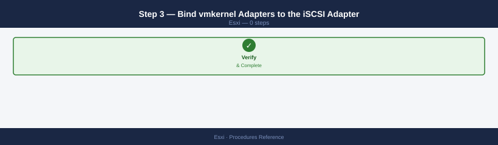
Network binding ensures iSCSI traffic from each adapter uses the correct physical uplink:
- Select the iSCSI software adapter → Network Port Binding tab → Add
- Add both iSCSI vmkernel adapters (vmk2, vmk3) to the binding
Step 4 — Add Target Discovery¶
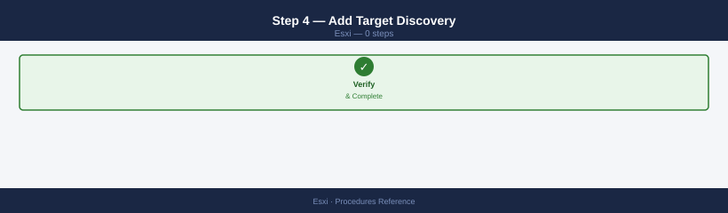
Dynamic Discovery (Send Targets — recommended):
- iSCSI adapter → Dynamic Discovery tab → Add
- Enter the iSCSI target IP (the array's iSCSI port IP) and port (3260)
- Click OK → Rescan — ESXi queries the target and discovers all LUNs the host's IQN is zoned to
Static Discovery (explicit target):
- iSCSI adapter → Static Discovery tab → Add
- Enter the target IQN and IP directly
Step 5 — Register the Host IQN on the Array¶
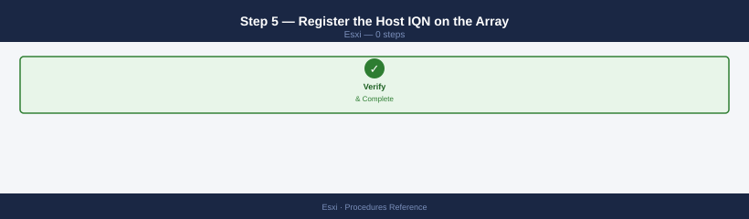
On the storage array, create an initiator group / host record using the ESXi host's IQN noted in Step 2, and map the target LUNs to that initiator group.
Step 6 — Rescan and Verify¶
# Rescan all storage adapters
esxcli storage core adapter rescan --adapter vmhba65
# List visible iSCSI targets and LUNs
esxcli iscsi session list
esxcli storage core path list | grep -i iscsi
In vCenter: Configure → Storage → Storage Adapters → iSCSI adapter → Paths — should show active paths for each mapped LUN. ALUA or Round Robin multipathing should activate automatically.
Apply a Host Profile and Check Compliance¶
Host Profiles enforce a standardised ESXi configuration baseline across all hosts in a cluster — NTP servers, syslog, lockdown mode, network settings, and more.
Step 1 — Create a Host Profile from a Reference Host¶
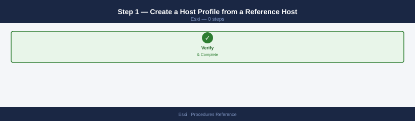
- vCenter → Home → Policies and Profiles → Host Profiles → Create Profile
- Select Create profile from existing host → choose the reference host (the most recently configured, known-good host in the cluster)
- Name the profile (e.g.,
prod-esxi-baseline-2026) and save
Step 2 — Attach the Profile to a Cluster¶
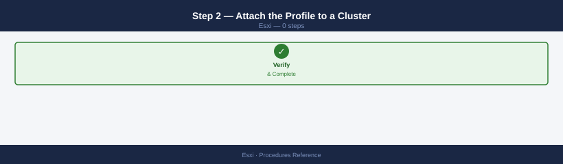
- Right-click the target cluster → Host Profiles → Attach/Detach Host Profile
- Select the profile → Attach → all hosts in the cluster are now associated with this profile
Step 3 — Check Compliance¶
- Select the cluster → Configure → Host Profiles → Check Compliance
- vCenter compares each host's running configuration against the profile
- Non-compliant settings are listed per host with a description of the drift
# PowerCLI — check compliance for all hosts in a cluster
$profile = Get-VMHostProfile -Name "prod-esxi-baseline-2026"
$cluster = Get-Cluster "Production-Cluster"
Test-VMHostProfileCompliance -VMHost (Get-VMHost -Location $cluster) -VMHostProfile $profile |
Select-Object VMHost, ComplianceStatus, IncomplianceDescription | Format-Table -AutoSize
Step 4 — Remediate Non-Compliant Hosts¶
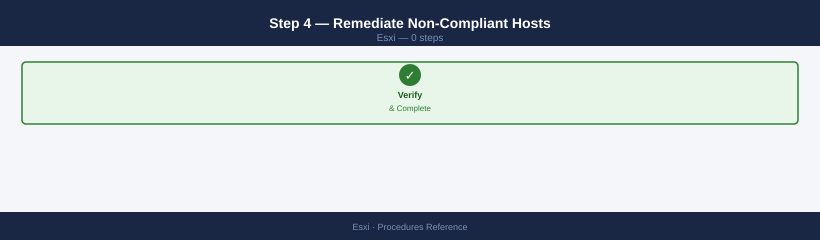
- Select non-compliant hosts in the compliance report → Remediate
- Hosts that require a reboot (e.g., NTP or network changes): schedule during a maintenance window
- Apply remediation one host at a time to avoid cluster instability
Remediation may reboot hosts without additional warning
Profile remediation applies changes immediately. For settings that require a reboot (network, storage adapter config), the host will enter maintenance mode and reboot as part of remediation. Confirm the cluster has sufficient capacity to absorb the host's workload before remediating.
See also¶
Verify¶
- Alarms: vSphere Client → Home → Alarms — no new critical alarms after the operation
- Events: monitor the vCenter Events view for the affected object for 5 minutes
- Health check: run the morning health-check sequence for the affected product tier